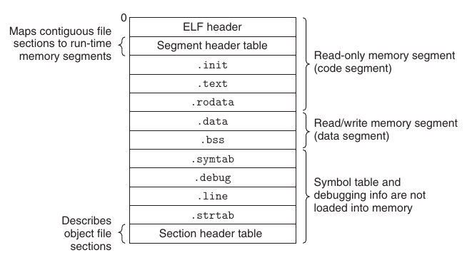

2. static linking
1. 静态链接过程🧐
- 符号解析: 关联跨模块符号的引用和定义，为重定位作铺垫
- 重定位:
- 模块编译生成
_.o时，由于不知道运行时的代码段和数据段的地址，模块内每引用一个全局符号 (自己定义的也算)，就生成一个重定位条目.rel._(先留坑并存点有效信息，等填) - 链接时，先合并所有的节，然后把地址赋给每个合并后的节、输入模块定义的所有符号，此时重定位信息已经完整 (节地址、函数和变量的地址都知道了)，根据重定位条目执行重定位
- 模块编译生成
2. 符号解析🧐
(1). 符号表🧐
.symtab 是 Elf64_Sym 的数组，其成员如下
typedef struct {
Elf64_Word st_name; /* Symbol name (string tbl index) */
unsigned char st_info; /* Symbol type and binding */
unsigned char st_other; /* Symbol visibility */
Elf64_Section st_shndx; /* Section index */
Elf64_Addr st_value; /* Symbol value */
Elf64_Xword st_size; /* Symbol size */
} Elf64_Sym;
st_name: 符号名，包含了符号在字符串表的下标st_value: 符号值。对于可执行文件和共享文件，其值代表运行时地址；对于可重定位文件且shndx有效的条目，其值代表段偏移st_size: 符号大小，例如double型的符号占 8 字节st_info: 符号类型和绑定信息，低 4 位是 symbol type，高 28 位是 symbol bindingst_other: 为 0, 没用st_shndx: 符号所在的段。如果符号定义在本目标文件中，那么此成员表示符号所在的段在段表中的下标，否则为特殊值
| macro | value | description |
|---|---|---|
STT_NOTYPE |
0 | 未知类型符号 |
STT_OBJECT |
1 | 数据对象，例如 变量、数组 |
STT_FUNC |
2 | 函数或其他可执行代码 |
STT_SECTION |
3 | 一个段，一定是是 STB_LOCAL |
STT_FILE |
4 | 文件名，一定是 STB_LOCAL，st_shndx 一定是 SHN_ABS |
| macro | value | description |
|---|---|---|
STB_LOCAL |
0 | 局部符号，文件外不可见 |
STB_GLOBAL |
1 | 全局强符号 |
STB_WEAK |
2 | 弱符号 |
| macro | value | description |
|---|---|---|
SHN_ABS |
0xfff1 | 表示该符号包含了一个绝对的值 |
SHN_COMMON |
0xfff2 | COMMON 类型的符号 |
SHN_UNDEF |
0 | 表示该符号未定义 (本文件引用，其他文件定义) |
(2). 符号分类与绑定🧐
每个目标模块都有一个符号表，在 linker 的上下文中，有三种符号:
- 本模块定义的全局符号 (非静态函数 和 全局变量)
- 其他模块定义, 被本模块引用的全局符号
- 只被本模块定义和引用的局部符号 (静态函数 和 静态全局变量)
编译时，编译器向汇编器输出全局符号及其强弱信息，汇编器把这个信息编码在符号表中
- strong: 默认情况下，模块中所有符号都是强符号
- weak: 需要额外定义
Linux 链接器构造全局符号表，根据如下规则处理多重定义的符号:
- Rule 1: 不允许有多个同名的强符号
- Rule 2: 如果有一个强符号和多个弱符号同名，选择强符号
- Rule 3: 如果有多个弱符号同名，从中任选一个
C static
C static 变量使用的场景
- 希望某个全局变量只在当前模块可访问
- 函数希望使用一个可以保留状态的局部变量 (不在栈上)，又不希望全局访问
static 变量需要 .bss 或 .data 上的空间，因此放在 .symtab 中。但不同函数可能定义同名的局部静态变量，符号表通常以 x.0, x.1 的方式区分
int f() {
static int a = 10;
}
int g() {
static int a = 20;
}
// readelf -s __.o : a.0, a.1
弱符号机制的作用
- 当前模块需要调试，而其他相关模块还未实现，先定义弱变量或弱函数进行调试
- 库中的某个函数定义为弱符号，支持使用者覆盖
COMMON mechanism
- 对于弱符号，可以
binding = weak, ndx = .bss，也可以binding = global, ndx = COM，后者相当于common就是弱标记，在合成可执行文件时都可以解析，取决于具体实现 COMMON段和.bss功能有点像，但COMMON的初衷是解决弱符号重名，纯是历史原因
/* test with gcc 10.2 & readelf */
double x __attribute__((weak)); // binding = STB_WEAK, NDX = 4
double y __attribute__((common)); // binding = STB_GLOBAL, NDX = COM
Rule 2 和 Rule 3 可能导致一些难以发现的错误
#include <stdio.h>
void f(void);
int x = 1;
int y = 2;
int main() {
f();
printf("x = 0x%x, y = 0x%x \n", x, y);
return 0;
}
double y __attribute__((common));
void f() {
y = -0.0;
}
$ gcc -Og -o foobar foo.c bar.c
$ ./foobar
x = 0x80000000, y = 0x0
3. 重定位🧐
(1). 重定位表🧐
/* Relocation table entry with addend (in section of type SHT_RELA). */
typedef struct {
Elf64_Addr r_offset; /* Address */
Elf64_Xword r_info; /* Relocation type and symbol index */
Elf64_Sxword r_addend; /* Addend */
} Elf64_Rela;
各成员的含义:
r_offset:- 对于 relocatable file，值为要修正位置第一个字节相对于段起始地址的偏移
- 对于 execuable / shared file，值为要修正位置第一个字节的虚拟地址
r_info: 低 8 位表示重定位条目的类型，高 24 位表示重定位的符号在符号表中的 indexr_addend: 有符号常数，一些类型的重定位需要用它作调整
ELF 定义了 32 种重定位类型，只关心最基本的两种:
R_X86_64_PC32: Relocate a reference that uses a 32-bit PC-relative addressR_X86_64_32: Relocate a reference that uses a 32-bit absolute address.
这两种类型支持 x86-64 小型代码模型 (假设代码和数据小于 2G, gcc default)，大型程序可用 -mcmodel=medium/large 编译
(2). 重定位符号的引用🧐
由 Elf64_Rela 的定义，假设每个重定位条目有 offset, symbol, type, addend 4 个属性
example
int sum(int* a, int n);
int array[2] = {1, 2};
int main() {
int val = sum(array, 2);
return val;
}
int sum(int* a, int n) {
int i, s = 0;
for (i = 0; i < n; ++i) {
s += a[i];
}
return s;
}
0000000000000000 <main>:
0: 48 83 ec 08 sub $0x8, %rsp
4: be 02 00 00 00 mov $0x2, %esi
9: bf 00 00 00 00 mov $0x0, %edi # %edi = &array
a: R_X86_64_32 array
e: e8 00 00 00 00 callq 13
f: R_X86_64_PC32 sum-0x4
13: 48 83 c4 08 add $0x8, %rsp
17: c3 retq
假设 s.ADDR = ADDR(.text) = 0x4004d0，r.symbol.ADDR = ADDR(sum) = 0x4004e8，计算过程:
r.offset = 0xf r.type = R_X86_64_PC32
r.symbol = sum r.addend = -4
refAddr = s.ADDR + r.offset = 0x4004d0 + 0xf = 0x4004df
*refPtr = (unsigned) (0x4004e8 + (-4) - 0x4004df)
= (unsigned) (0x5)
----------------------- result: -----------------------
4004de: e8 05 00 00 00 callq 4004e8 <sum>
4004e3: ...
解释:
- 重定位代码段中的引用前，确定了
.text地址0x4004d0，sum地址0x4004e8 - 由
.text地址加偏移 (r.offset)，确定填空e8 __ 00 00 00 callq 13 <sum>的地址0x4004df *(0x4004df) = x，由于是 PC 相对寻址，先0x4004df + 4获得下一条指令的地址0x4004e3，然后减去函数地址x = 0x4004e3 - 0x4004e8 = 0x5
4. 可执行文件🧐

可执行目标文件和可重定位目标文件相似:
- 多了一个段头部表，索引了运行时所需的段
- 已经链接好，无需重定位节
.rel._
example
int array[1000];
int main() {
int b = array[0];
}
$ gcc test.c -no-pie -o test
$ readelf -l test
Elf 文件类型为 EXEC (可执行文件)
Entry point 0x401020
There are 13 program headers, starting at offset 64
程序头：
Type Offset VirtAddr PhysAddr
FileSiz MemSiz Flags Align
PHDR 0x0000000000000040 0x0000000000400040 0x0000000000400040
0x00000000000002d8 0x00000000000002d8 R 0x8
INTERP 0x0000000000000318 0x0000000000400318 0x0000000000400318
0x000000000000001c 0x000000000000001c R 0x1
[Requesting program interpreter: /lib64/ld-linux-x86-64.so.2]
LOAD 0x0000000000000000 0x0000000000400000 0x0000000000400000
0x0000000000000550 0x0000000000000550 R 0x1000
LOAD 0x0000000000001000 0x0000000000401000 0x0000000000401000
0x00000000000001a5 0x00000000000001a5 R E 0x1000
LOAD 0x0000000000002000 0x0000000000402000 0x0000000000402000
0x00000000000000f8 0x00000000000000f8 R 0x1000
LOAD 0x0000000000002e40 0x0000000000403e40 0x0000000000403e40
0x00000000000001e8 0x00000000000011c0 RW 0x1000
DYNAMIC 0x0000000000002e50 0x0000000000403e50 0x0000000000403e50
0x0000000000000190 0x0000000000000190 RW 0x8
NOTE 0x0000000000000338 0x0000000000400338 0x0000000000400338
0x0000000000000040 0x0000000000000040 R 0x8
...
Section to Segment mapping:
段节...
00
01 .interp
02 .interp .note.gnu.property .note.gnu.build-id .note.ABI-tag .gnu.hash .dynsym .dynstr .gnu.version .gnu.version_r .rela.dyn
03 .init .text .fini
04 .rodata .eh_frame_hdr .eh_frame
05 .init_array .fini_array .dynamic .got .got.plt .data .bss
06 .dynamic
07 .note.gnu.property
...
注意需要关闭代码段和数据段的随机化 -no-pie。FileSiz 代表目标文件的节大小，MemSiz 代表加载到内存中的段大小。由最后一个 LOAD，可以知道可执行文件中 .bss 放在数据段最后且不占内存的原因。
5. 和静态库链接🧐
所有的编译系统都支持把多个目标模块打包成一个 static library，如果没有静态库:
- 编译器根据库函数名生成代码，这回加大编译器的复杂度，且不好维护
- 把所有目标模块编译成一个，浪费空间，不好维护
静态库聚合了多个模块，在链接时，链接器只复制被程序引用的模块，丢弃其他模块。实际上，C 编译器默认传送 libc.a 给链接器。
(1). 示例🧐
int addcnt = 0;
void addvec(int *x, int *y, int *z, int n) {
int i;
addcnt++;
for (i = 0; i < n; ++i)
z[i] = x[i] + y[i];
}
int multcnt = 0;
void multvec(int *x, int *y, int *z, int n) {
int i;
multcnt++;
for (i = 0; i < n; ++i)
z[i] = x[i] * y[i];
}
#include <stdio.h>
#include "vector.h"
int x[2] = {1, 2};
int y[2] = {3, 4};
int z[2];
int main() {
addvec(x, y, z, 2);
printf("z = [%d %d]\n", z[0], z[1]);
return 0;
}
void addvec(int *, int *, int *, int);
void multvec(int *, int *, int *, int);
$ gcc -c addvec.c multvec.c
$ ar rcs libvector.a addvec.o multvec.o
$ gcc -c main.c
$ gcc -static -o prog main.o ./libvector.a
$ ./prog
z = [4 6]
(2). 静态库解析引用🧐
Linux linker 维护一个 relocatable files 集合 $E$，未解析的符号集合 $U$，已成功解析符号集合 $D$；然后从左向右对目标文件 $f_i$ 进行符号解析:
- $f_i$ 是一个目标文件:
- linker 把 $f$ 加入 $E$，linker 尝试匹配 $U$ 中未解析符号 以及 $f_i$ 定义的符号
- $f_i$ 是一个存档文件:
- 遍历成员，如果 $f_i$ 的某个成员 $m$ 定义的符号解析了 $U$ 中的一个引用，就将 $m$ 加入 $E$
解析结束后，$U$ 非空则报错。这种方式要求引用变量的模块在前面，因此需要注意:
- 库一般放在命令行结尾
- 如果库之间不是相互独立的，还要对它们进行合适的排序